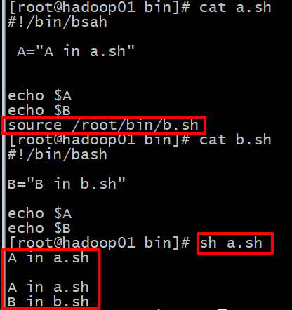

1.source的使用
（1）使用source时
在a.sh中使用source调用b.sh时，就相当于把b.sh文件里的代码原封不动的放到了a.sh中source命令当前的位置处，然后程序按照从上往下的顺序依次执行代码，程序始终是在系统中的同一个进程中执行，没有从一个进程跳转到另一个进程。所以结果如图所示:

（2）不使用source时
在a.sh中直接用路径调用b.sh时(直接用路径调用b.sh需要b.sh有执行权限,用source则不用)，则程序会在执行到路径所在位置时，会直接跳转到b.sh去执行，待b.sh执行完后，才回到a.sh继续执行。也就是说：在系统为a.sh分配了一个进程执行a.sh里的内容时，执行到/root/bin/b.sh处时，系统重新为执行a.sh的进程分配一个子进程执行b.sh，待执行b.sh的子进程执行完毕后，子进程终止，该进程所占用的内存空间释放，同时继续回到执行a.sh的父进程继续执行。所以b.sh中的B变量的声明定义并不能被文件a.sh知晓, 同理a.sh中的A变量的声明定义也并不能被文件b.sh知晓，就如同高级编程语言中的函数调用一样，/root/bin/b.sh命令就像是将b.sh函数在a.sh函数中调用一样。而与高级编程语言的函数调用一样，在A函数内部调用B函数，若不传参，B函数同样无法使用A函数里面的局部变量。所以，没有source，子进程同样无法使用父进程的变量。而在(1)中使用了source则不一样, b.sh是可以访问到a.sh的局部变量的, 而在source语句后面如果还有代码的话, a.sh也可以访问到b.sh的局部变量了

在使用该文件（脚本）的路径作为语句调用别的脚本文件时（如上图的/root/bin/b.sh也就是不用source或 . 命令的情况下）：
如果一个变量由关键字export修饰，那么该变量将会变成全局变量。那么该变量所在的进程的所有子进程都能访问该全局变量，但和上面相同的道理，该变量即使用export修饰变为全局变量，也无法被他的父进程使用（其实就是因为子进程执行完毕后其内存空间将会被释放，其中所存储的全局变量也会不见，所以父进程根本访问不到）
2.运算符

用双括号比较适合我们平常的使用，不用去记那么多shell编程自定义的新符号，[[]]双括号不仅可以直接使用我们常用的逻辑运算符与或非（&& || ! ），还能正常使用关系运算符的(< > =)等，如 [[ 1 > 2 ]] 可以正确判断出里面的含义，但是注意使用双括号时,里面的内容左右两边各必须要有一个空格，且内容和运算符之间也必须要有空格，即[[ 1 > 2 ]]等价于[[空格1空格>空格2空格]]。
需要注意: shell对运算符附近的空格管理比较严格。如a.sh文件里有如下内容:
#!/bin/bash
A="hello world"
echo $A
但如果A="hello world"写成了A = "hello world" , 执行就会报错, 就只是在等号左右加了两个空格, 都不行。
3.函数
例一：

例二：


特殊变量
$$ 进程号
$# 参数个数
$? 上一句代码的返回状态码
$* 参数列表
$@ 参数列表
$1 第一个位置上的参数
$2 第二个位置的参数
${12} 第十二个位置上的参数
$0 执行命令中的脚本的名称
shell脚本中if语言的各种参数:
查看文件或者目录是否存在，经常用到-d,-e,-f，其中区别如下
-e filename 如果 filename存在，则为真
-d filename 如果 filename为目录，则为真
-f filename 如果 filename为常规文件，则为真
-L filename 如果 filename为符号链接，则为真
-r filename 如果 filename可读，则为真
-w filename 如果 filename可写，则为真
-x filename 如果 filename可执行，则为真
-s filename 如果文件长度不为0，则为真
-h filename 如果文件是软链接，则为真
filename1 -nt filename2 如果 filename1比 filename2新，则为真。
filename1 -ot filename2 如果 filename1比 filename2旧，则为真。
-eq 等于
-ne 不等于
-gt 大于
-ge 大于等于
-lt 小于
-le 小于等于
字符串变量表达式
if [ $a = $b ] 如果string1等于string2，则为真，字符串允许使用赋值号做等号
if [ $string1 != $string2 ] 如果string1不等于string2，则为真
if [ -n $string ] 如果string 非空(非0），返回0(true) ,否则为假
if [ -z $string ] 如果string 为空，则为真
if [ $sting ] 如果string 非空，返回0 (和-n类似) 逻辑非 ! 条件表达式的相反
if [ ! 表达式 ]
if [ ! -d $num ] 如果不存在目录$num 逻辑与 –a 条件表达式的并列
if [ 表达式1 –a 表达式2 ] 逻辑或 -o 条件表达式的或
if [ 表达式1 –o 表达式2 ]
举例:
shell 中利用 -n 来判定字符串非空。
错误用法：
ARGS=$*
if [ -n $ARGS ]
then
print "with argument"
fi
print " without argument"
这样写的结果是,不管$ARGS具体参数是啥，if语句都是true, 打印的结果都会是: with argument
原因：因为$ARGS不加双引号时该if语句等价于if [ -n ]，也就是说, shell 会把该if语句当成if [ str1 ]来处理(其中str1的值为-n)，所以自然str1不为空，所以if为真。
正确用法：需要在$ARGS上加入双引号，即if语句变为if [ -n "$ARGS" ]。
—————————————————手写与上传资料分割线—————————————————
1、shell概述
程序设计语言
linux的shell也是一种编程语言 --- 程序设计语言
shell ：外壳
Linux的内核
操作这个内核：通过外壳协议。 shell编程语言
shell操作： 应用软件 shell命令
每次执行一个shell命令都能立即得到该命令的执行结果，这种过程： 叫做交互式
java编程语言。 没有。 javac java
静态/脚本 + 动态
编译型 + 解释型
区别：静态的不需要编译，直接直接解释执行
一般来说，静态编程语言，都会提供交互的客户端
动态语言。一般来说不提供。
shell就是一个交互式的脚本编程语言
静态、脚本、动态
shell常用的解释器
解释器： shell的解释器
默认的shell解释器： bash
csh tsh ksh
shell编程语言的工作原理
shell脚本的工作原理：
1、代码的执行机制
脚本语言：从上到下顺序执行
编译型：java ，代码执行顺序没有顺序
2、shell脚本其实就是通过一些流程控制来组织一些单个的shell命令
1、shell 编程中有流程控制 + 变量的定义
2、其实shell编程中的关键字，除了流程控制的那些关键字之外，全部都是 命令
shell命令就是shell编程中的关键字
shell命令是关键字。
能不能定义一个变量的名称即是一个命令的名称？
cd=3
变量定义的取值范围，不能是该编程语言当中的 关键字 和 保留字
2、shell编程的基本格式
shell命令 + 关键字 + 其他语法（| >> ）
shell编程的入门程序
helloworld.sh
#!/bin/bash #### 用来声明该脚本在某些情况下是用什么样的解释器去执行
echo "hello world"
文件名变量的命名规则： 最好采用驼峰规则
3、shell脚本的执行方式
1、调用解释执行 sh bash 等
sh helloworld.sh
bash helloworld.sh 直接调用某个解释去执行脚本
2、source 或者 .
使用默认的解释器去执行
3、赋予执行权限，直接执行该脚本
可以直接调用脚本文件的全路径来执行该脚本：必须要给执行该脚本的用户赋予执行权限
chmod u+x helloworld.sh
在默认情况下， 如果没有声明解释器，那么就调用当前会话的那个bash的解释器去执行
4、shell注释
单行 注释
多行注释
推荐： 不管用什么编程语言写代码，要养成写注释的好习惯
核心精髓： 贵精 不 贵多
5、shell变量
系统变量
set
自定义变量
自定义的变量名称的规范： 都大写
在使用该脚本的可执行权限去执行时：
如果一个变量用export去修饰，那么该变量能够提升为全局变量。 那么该进程的所有子进程都能访问
如果一个变量用export去修饰，该变量无论如何都没法让它的父进程去使用
source 和 . 的执行方式，是把 b.sh 脚本的内容读取出来放到a.sh的进程中一起顺序执行。
问题：为什么在配置环境变量时，要把JAVA_HOME 和 PATH 要用export去修饰？
每个用户在登录的时候，都会自动去寻找对应的用户环境变量的配置文件去加载。
所以每个用户在登录的时候时候。该登录命令的执行进程都会加载该环境变量配置文件中的所有变量
如果使用export去修饰，那么该用户以后无论执行什么脚本 都能访问得到在环境变量中用
export修饰的变量
特殊变量
$$ 进程号
$# 参数个数
$? 上一句代码的返回状态码
$* 参数列表
$@ 参数列表
$1 第一个位置上的参数
$2 第二个位置的参数
${12} 第十二个位置上的参数
$0 执行命令中的脚本的名称
6、运算符
算术运算符 + - * / %
关系运算符 > >= < <= !=
布尔运算符 true false
位运算符 & |
逻辑运算符 && || ！
字符串运算符 -z -n
文件运算符 -d -f -l -e
[ $(echo "2.2 > 2" |bc) -eq 1 ] && echo yes || echo no
7、流程控制
if
while
case
for
until
跳出循环
字符串的处理（截取， 替换， 查找）
日期时间的处理
8、数组
数组的定义
数组的访问
数组的遍历
9、shell读取文件内容
读取文件 读
定向符 > >> 写
管道符 cmd1 | cmd2 | cmd3 | cmd4
10、函数
函数的定义
function myfunc(){
echo "hello"
}
1、定义函数必须使用function来声明
2、函数名追随变量名的取名规范， 函数名最好不要跟系统中的某些命令重复
3、shell的函数本身不用声明传参，在使用的时候，进行传参
传参的方式跟对脚本传参的方式一样 sh for.sh 1 2 3
4、函数的使用方式和普通命令一样。把函数当做是普通命令即可
函数的调用
函数的传参
function myfunc(){
echo "hello"
echo $#
echo $1
}
echo $1
echo $#
myfunc 1 2 a b
执行脚本： sh func.sh a b 1 2
函数的返回值
function myfunc(){
echo "hello"
echo $#
return 254
}
echo $#
myfunc 1 2 a b
echo $?
跨脚本调用函数
11、shell编程综合案例
99乘法表
集群自动安装JDK
12、shell编程其他有用小技巧